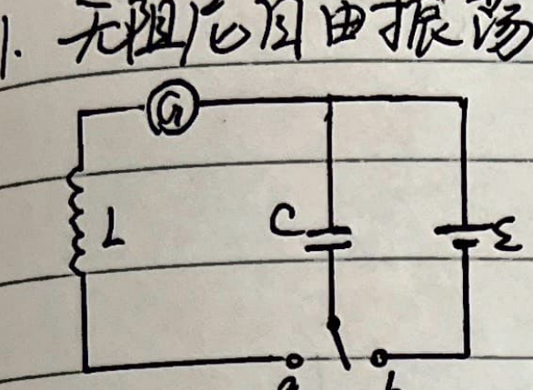
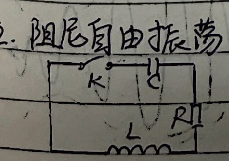
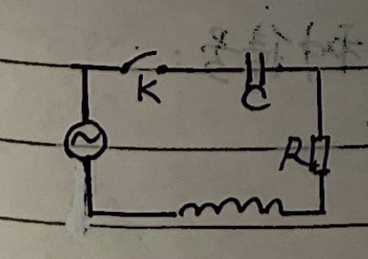
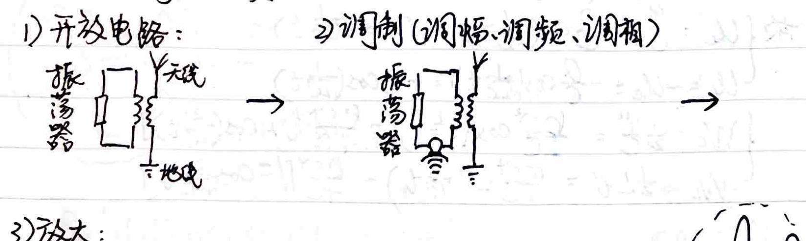
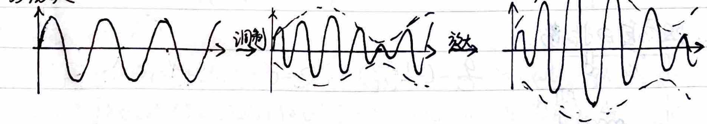
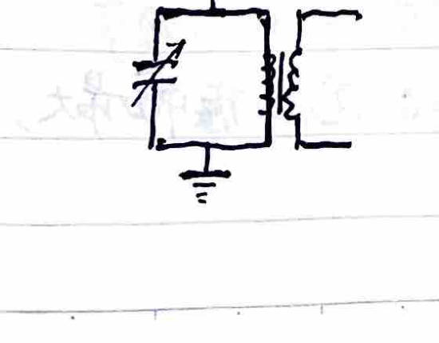

Chapter 10: Electromagnetic Oscillations and Waves
1. Undamped Free Oscillations

Solving this differential equation yields: $i = i_m \sin\left(\frac{1}{\sqrt{LC}} t\right)$.
$$ \frac{di}{dt} = \frac{i_m}{\sqrt{LC}} \cos\left(\frac{1}{\sqrt{LC}} t\right) = \frac{q}{LC} $$At $t=0$, $q = C\mathcal{E}$, so $\frac{i_m}{\sqrt{LC}} = \frac{C\mathcal{E}}{LC} = \frac{\mathcal{E}}{L} \implies i_m = \frac{\mathcal{E}}{\sqrt{L/C}}$.
$$ \therefore i = \frac{\mathcal{E}}{\sqrt{L/C}} \sin\left(\frac{1}{\sqrt{LC}} t\right) $$ $$ q = -\int i dt = -\frac{\mathcal{E}}{\sqrt{L/C}} \int \sin\left(\frac{1}{\sqrt{LC}} t\right) dt = -\mathcal{E} C \int \sin\left(\frac{1}{\sqrt{LC}} t\right) d\left(\frac{1}{\sqrt{LC}} t\right) = C\mathcal{E} \cos\left(\frac{1}{\sqrt{LC}} t\right) $$Therefore, we have the following relations for voltage and energy:
- $U_C = \frac{q}{C} = \mathcal{E} \cos\left(\frac{1}{\sqrt{LC}} t\right)$
- $U_L = -U_C = -\mathcal{E} \cos\left(\frac{1}{\sqrt{LC}} t\right)$
- $W_C = \frac{1}{2} \frac{q^2}{C} = \frac{(C\mathcal{E})^2}{2C} \cos^2\left(\frac{1}{\sqrt{LC}} t\right) = \frac{C\mathcal{E}^2}{4} \left[1 + \cos\left(\frac{2}{\sqrt{LC}} t\right)\right]$
- $W_L = \frac{1}{2} L i^2 = \frac{L \mathcal{E}^2}{2 L/C} \sin^2\left(\frac{1}{\sqrt{LC}} t\right) = \frac{C\mathcal{E}^2}{4} \left[1 - \cos\left(\frac{2}{\sqrt{LC}} t\right)\right]$
2. Damped Free Oscillations

3. Forced Oscillations

4. Electromagnetic Waves
1) Maxwell's Equations and Electromagnetic Waves
From Maxwell's equations in integral form:
$$ \oint \vec{E} \cdot d\vec{S} = \frac{\Sigma q}{\varepsilon_0} $$ $$ \oint \vec{B} \cdot d\vec{S} = 0 $$ $$ \oint \vec{E} \cdot d\vec{l} = -\frac{d\Phi_B}{dt} = -\int_S \frac{\partial \vec{B}}{\partial t} \cdot d\vec{S} $$ $$ \oint \vec{B} \cdot d\vec{l} = \mu_0 \left( I + \varepsilon_0 \frac{d\Phi_E}{dt} \right) = \mu_0 \int_S \left( \vec{j} + \varepsilon_0 \frac{\partial \vec{E}}{\partial t} \right) \cdot d\vec{S} $$We can derive the wave speed in a vacuum: $c = \frac{1}{\sqrt{\mu_0 \varepsilon_0}}$.
The relationship between the electric field and magnetic field in an electromagnetic wave is: $\vec{B} = \frac{\hat{c} \times \vec{E}}{c}$, where $\hat{c}$ is the unit vector in the direction of propagation (Note: the text implies $B = E/c$).
Energy Density and Flux:
- Energy Density: $\omega = \frac{1}{2}\varepsilon_0 E^2 + \frac{1}{2\mu_0} B^2 = \frac{1}{2}\varepsilon_0 E^2 + \frac{1}{2\mu_0} \left(\frac{E}{c}\right)^2 = \varepsilon_0 E^2$.
- Energy Flux Density (Poynting Vector Magnitude): $S = \frac{\omega dS \cdot c dt}{dS \cdot dt} = c\omega = \frac{EB}{\mu_0}$. In vector form: $\vec{S} = \frac{1}{\mu_0} \vec{E} \times \vec{B}$.
- Intensity (Average Flux): $\bar{S} = I = \overline{c\omega} = c\varepsilon_0 \overline{E^2} = \frac{1}{2} c\varepsilon_0 E_m^2 \propto E_m^2$.
Radiation Pressure:
- On a perfectly absorbing black body: $p_r = \frac{W/c}{\Delta t \cdot \Delta S} = \frac{W}{c \cdot \Delta t \cdot \Delta S} = \omega = \varepsilon_0 E^2$.
- On a perfectly reflecting surface: $p_r = 2\varepsilon_0 E^2$.
2) Principles of Transmission and Reception
- Open Circuit: An LC oscillator is coupled to an open circuit (antenna and ground) to radiate waves effectively.

- Modulation (AM, FM, PM) & Amplification: The base signal modulates a high-frequency carrier wave for transmission.

